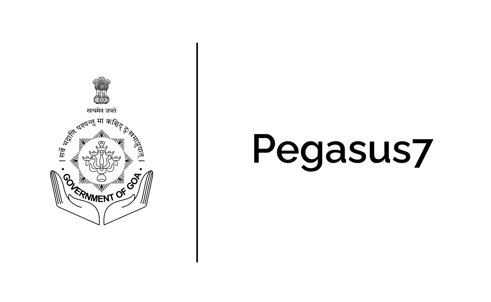
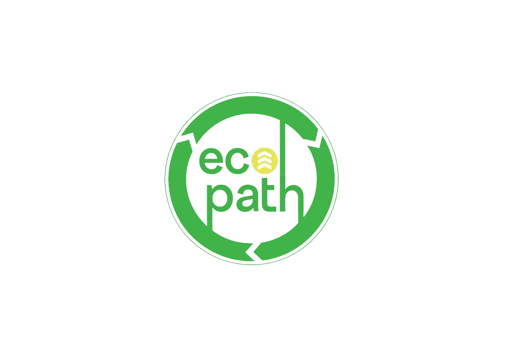
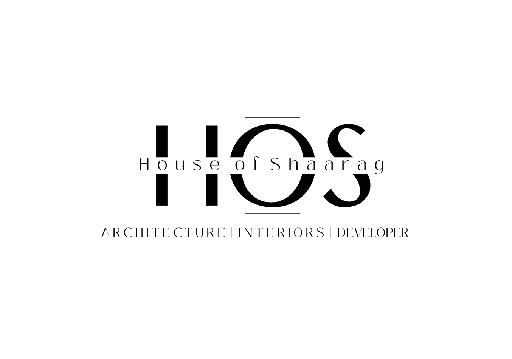

Developer · UX Engineer
I build the whole product, from the first user interview to the last line of code.
I am Gitanshu Gupta, a full-stack developer who works across the entire lifecycle of a product: understanding the people it is for, shaping how it should feel, and building the system that makes it run.
Selected work

Case study
Pothole Redressal System
A zero-friction way for citizens to report potholes through platforms they already trust, paired with a tool that helps municipal officials track, group, and resolve every complaint.

Case study
EcoPath
The website for a cement-free construction startup, built around a carbon calculator that makes a project's CO2 savings tangible.

Case study
House of Shaarag
The website for a bespoke interior design studio, designed so the site itself reads as the quiet luxury the studio sells.
About
I am a computer science engineer who likes building products end to end. Most of my work has been full-stack and automation development, but the part I enjoy most sits before the code: understanding who I am building for and what actually gets in their way.
I also run WebLynks, a small studio where I help people turn ideas into working products. Along the way I have learned that a system being functional is not the same as it being easy to use, and that gap is what pulls me toward user experience and human-computer interaction.
Right now I am focused on going deeper into that craft: research, interaction design, and building things people find genuinely simple to use.
What I do
- User research & discovery
- Interaction & UX design
- Full-stack development
- Prototyping & testing
Tools
Django · Postgres · JavaScript · Figma · Twilio · Git
Design Sandbox
An interactive look at live visual prototypes, UI component systems, and interface explorations curated directly from my design workspace.
Get in touch